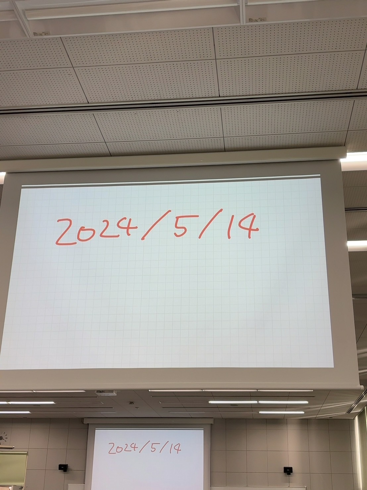

<html>
<body bgcolor=greenyellow>
こんにちは！<br>
<font size="6">第 55 回　青空中　文化祭</font><br>
テーマ　青空中の生徒はこんなことまでできるんです。
－お越しください。日ごろの成果をすべて見せます－<br>
<font color=red>日時：11 月 1 日（金）午前 9 時～午後 3 時</font>
</body>
</html>
<p xmlns:cc="http://creativecommons.org/ns#" >This work is licensed under <a href="https://creativecommons.org/licenses/by-nc-nd/4.0/?ref=chooser-v1" target="_blank" rel="license noopener noreferrer" style="display:inline-block;">CC BY-NC-ND 4.0</a></p>